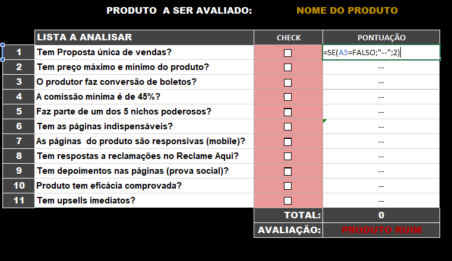

<!-- <div class="allpage"> -->
  <!-- Navbar -->
  <!-- <div class="container">
    <p class="text-motivation">
      Não importa a velocidade e sim a intensidade, caminhe passo a passo e
      chegará no seu objetivo. "Somos o que fazemos repetidamente. excelência não é
      um ato mas sim um hábito" - Aristoteles
    </p>
    <mat-grid-list cols="2" rowHeight="130px">
      <div *ngFor="let timeline of listTimeline; let i = index">
        <mat-grid-tile *ngIf="i % 2 == 0">
          <span class="date"> {{ timeline.date }}</span>
        </mat-grid-tile>
        <mat-grid-tile *ngIf="i % 2 != 0">
          <mat-card>
            <mat-card-title class="title">{{ timeline.title }}</mat-card-title>
            <mat-card-content
              ><p class="description">
                {{ timeline.description }}
              </p></mat-card-content
            >
          </mat-card>
        </mat-grid-tile>
        <mat-grid-tile *ngIf="i % 2 != 0"><span class="date"> {{ timeline.date }}</span></mat-grid-tile>
        <mat-grid-tile *ngIf="i % 2 == 0"
          ><mat-card>
            <mat-card-title class="title">{{ timeline.title }}</mat-card-title>
            <mat-card-content
              ><p class="description">
                {{ timeline.description }}
              </p></mat-card-content
            >
          </mat-card>
        </mat-grid-tile>
      </div>
    </mat-grid-list> -->
    <!-- <p>
      Tudo começou quando eu estava procurando uma oportunidade na área do
      Marketing Digital, naquela época, era um garoto perdido, sem rumo e
      andando no meio do escuro, ate que eu iniciei um projeto em Excel, por não
      ter dinheiro suficiente, com o Objetivo de copiar uma planilha do Thiago
      Finch do curso Nômade Digital, fiz minhas primeiras linhas de Logica, ali
      iniciava uma jornada na área Digital, então me comuniquei com um primo que
      era desenvolvedor, que me auxiliou no termino da Planilha e me aconselhou
      estudar Lógica de Programação!
    </p>
    
  </div>
  <div class="container">
    
    <p>
      Sem saber onde estava me metendo, abri o Youtube e filtrei as pesquisas
      sobre Algoritmos e dei de cara com a plataforma Cursoemvideo onde conheci
      o Professor <span><a href=""> Gustavo Guanabara</a></span> e toda a sua
      essência de ensinar, a didática desse cara era surpreendente, comecei o
      curso e fui aprendendo devagar, resolvendo exercícios com Portugol
      utilizando o Visualg, Estruturas Condicionais, de Repetições, Função e
      Método, Operadores Lógicos, Relacionais e Aritméticos Tabela Verdade,
      Vetores e Matrizes e finalizei com Função
    </p>
  </div>
  <div class="container">
    -->
  <!-- </div>
</div> -->
